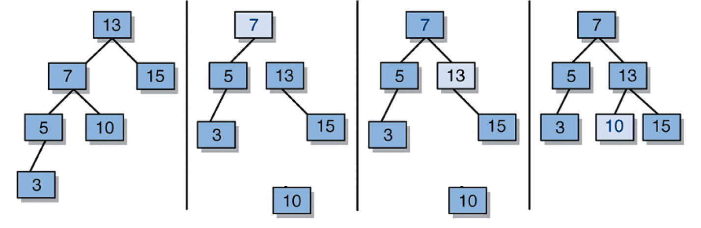

Right Rotation Steps
- Detach left child (7)'s right subtree (10)
- Consider left child (7) be the new parent
- Attach old parent (13) onto right of new parent (7)
- Attach old left child (7)'s old right subtree (10) as left
subtree of new right child (13)
